Proyecte versículos de la Biblia, letras de canciones y rótulos con nombres en el proyector de la iglesia y en la transmisión en vivo con OBS Studio, desde un solo panel y con el celular como control remoto.
«Por toda la tierra salió su voz, y hasta el extremo del mundo sus palabras.» — Salmos 19:4
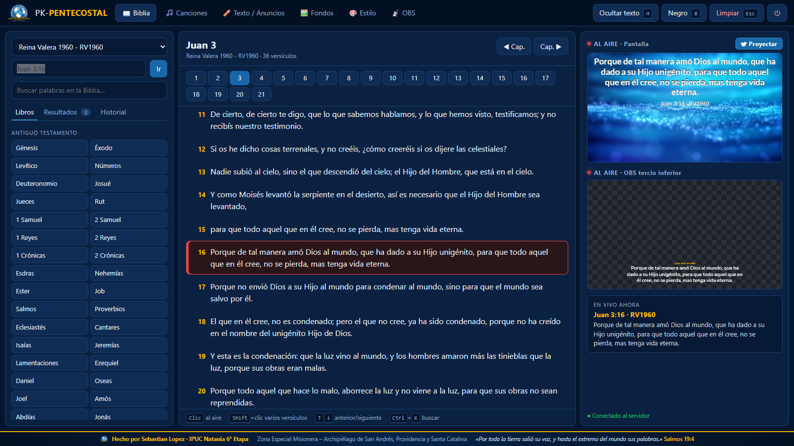
PK-PENTECOSTAL corre en el computador de la iglesia, se maneja desde el navegador y no necesita internet durante el culto. Lo que usted elige aparece al mismo tiempo donde lo necesite.
A pantalla completa, con fondos de imagen o video y transiciones suaves.
Capa transparente para OBS Studio: tercio inferior, banner o pantalla completa.
Control remoto escaneando un código QR. Sin instalar nada en el teléfono.
Pensado para el operador de medios: rápido con el teclado, claro en el proyector y bonito en la transmisión.
jn 3 16, sal 23 o 1 co 13:4-7.//así//, coros y estrofas numeradas.Toque una imagen para verla en grande.
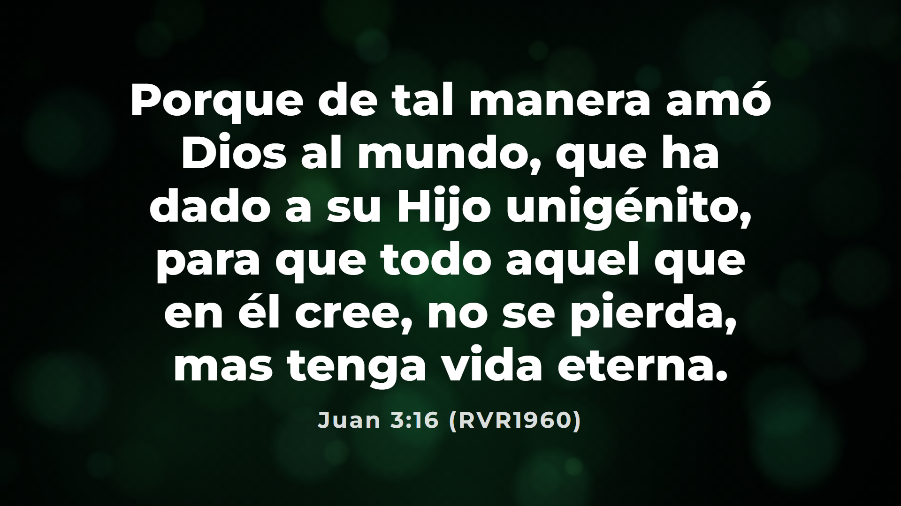
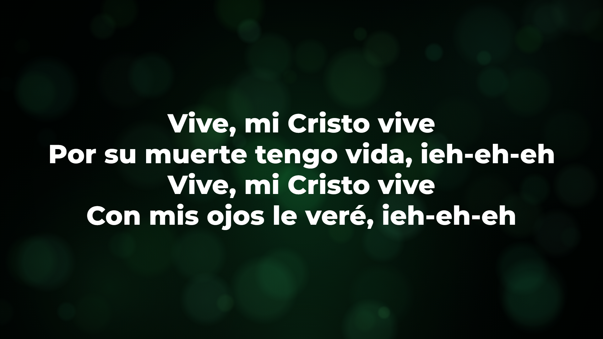
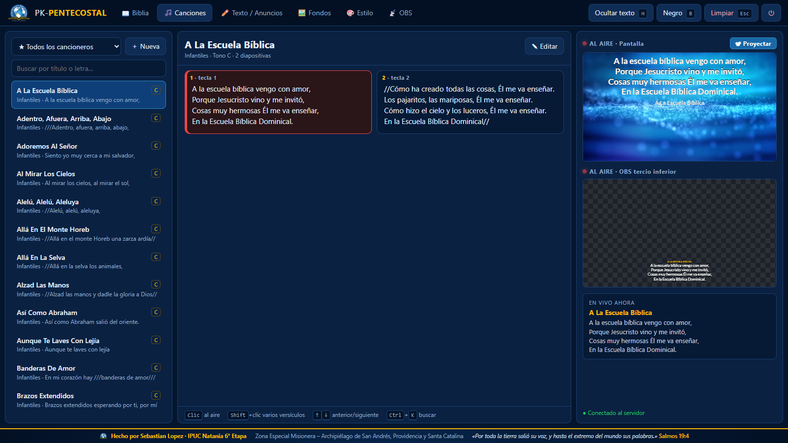
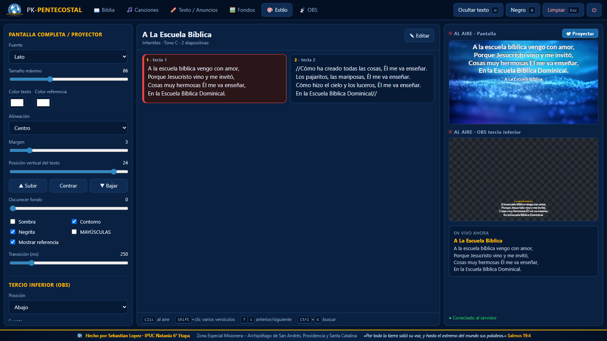
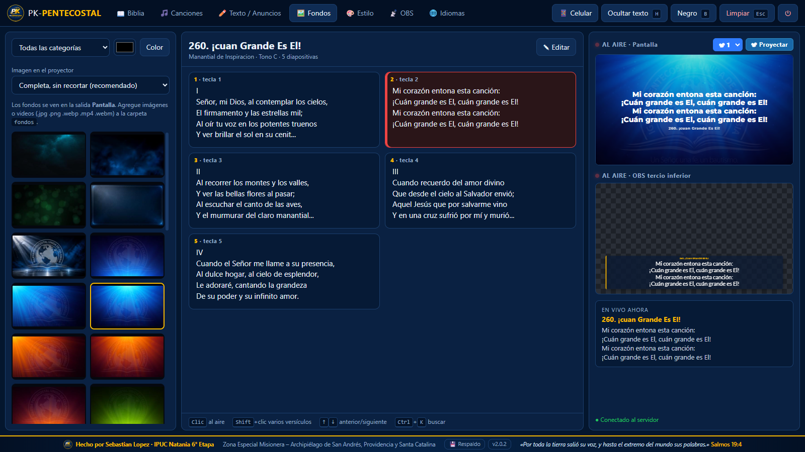
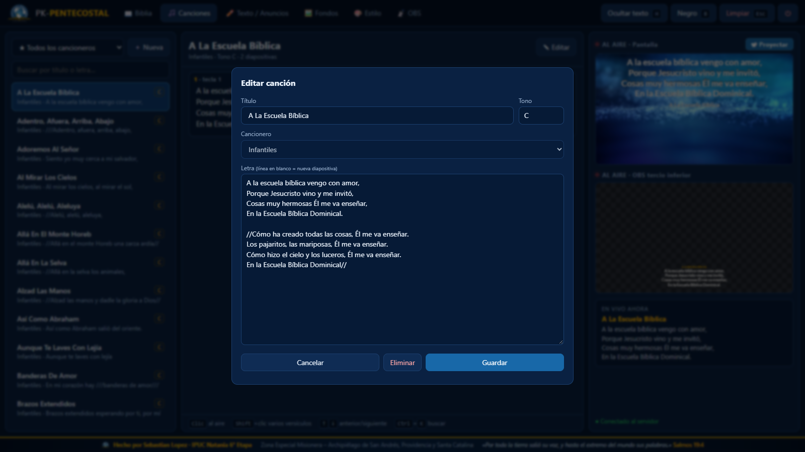
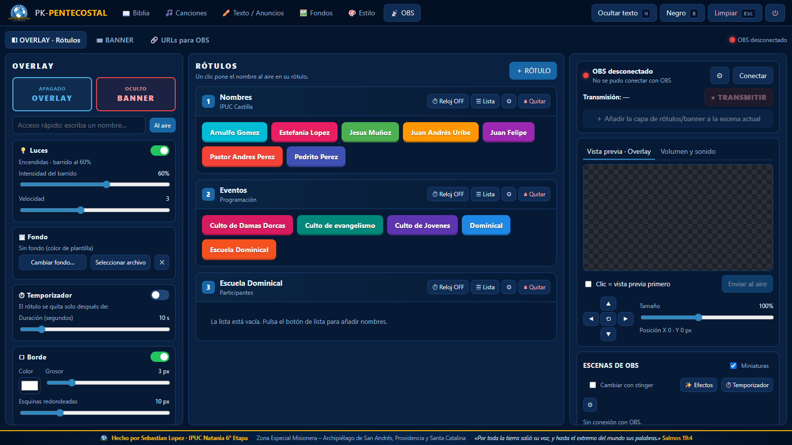
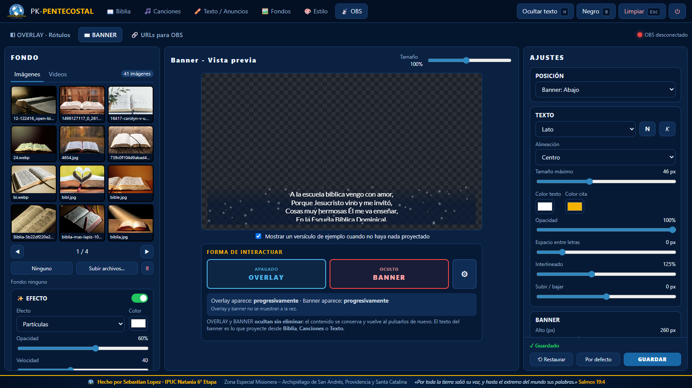
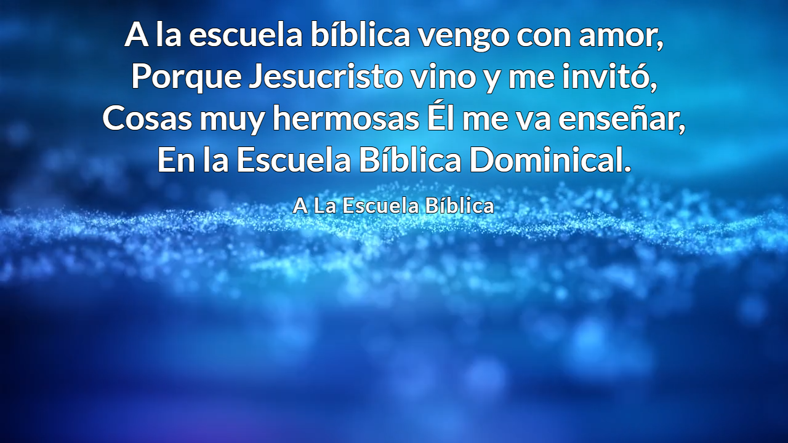
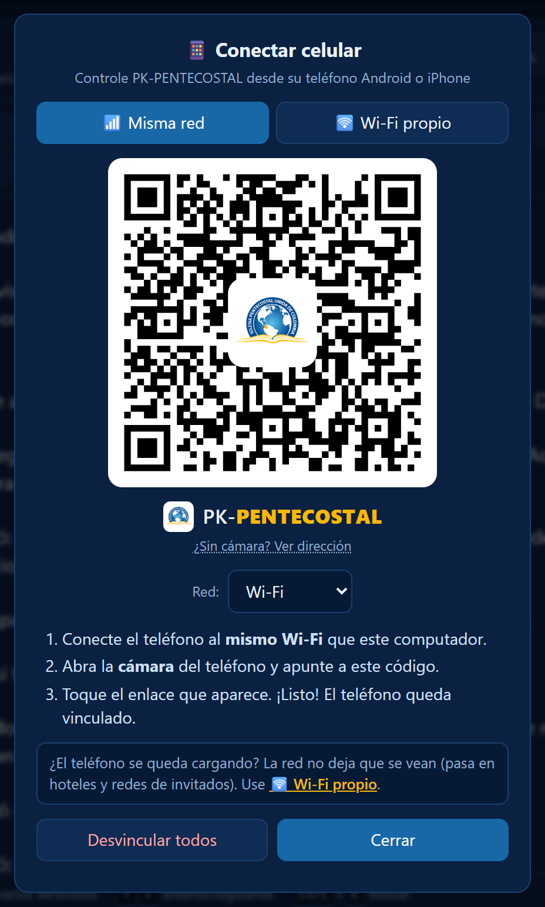
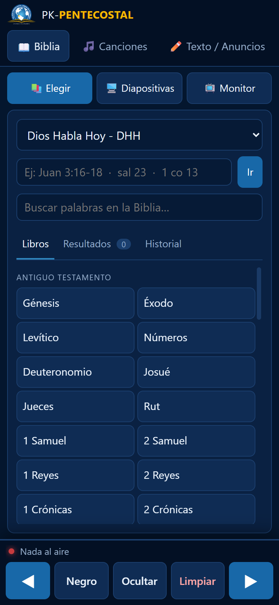
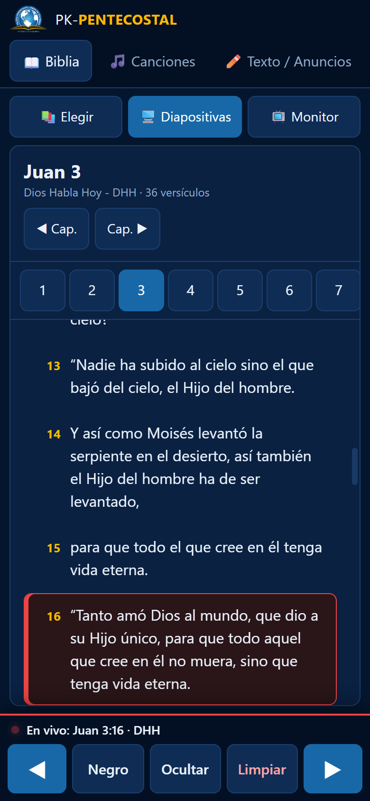
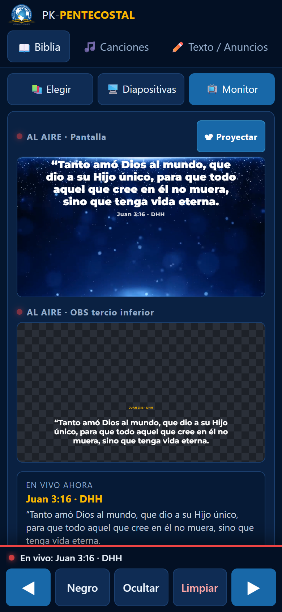
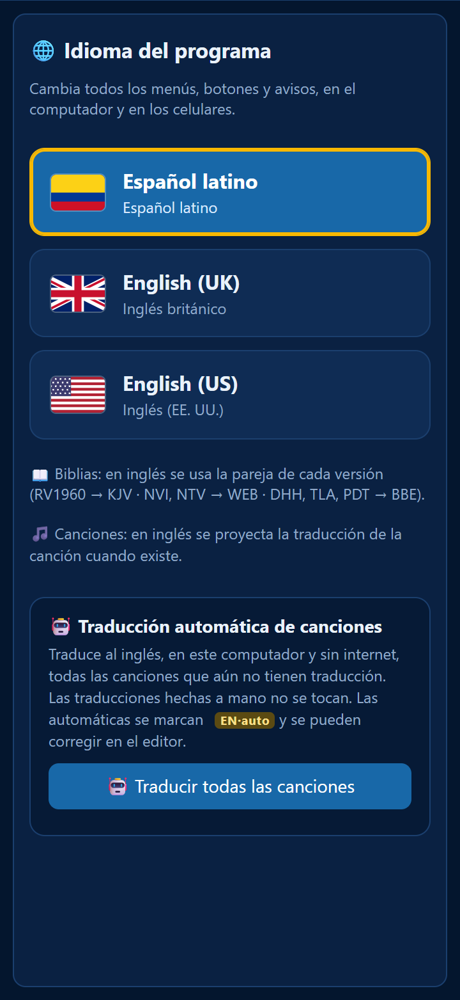
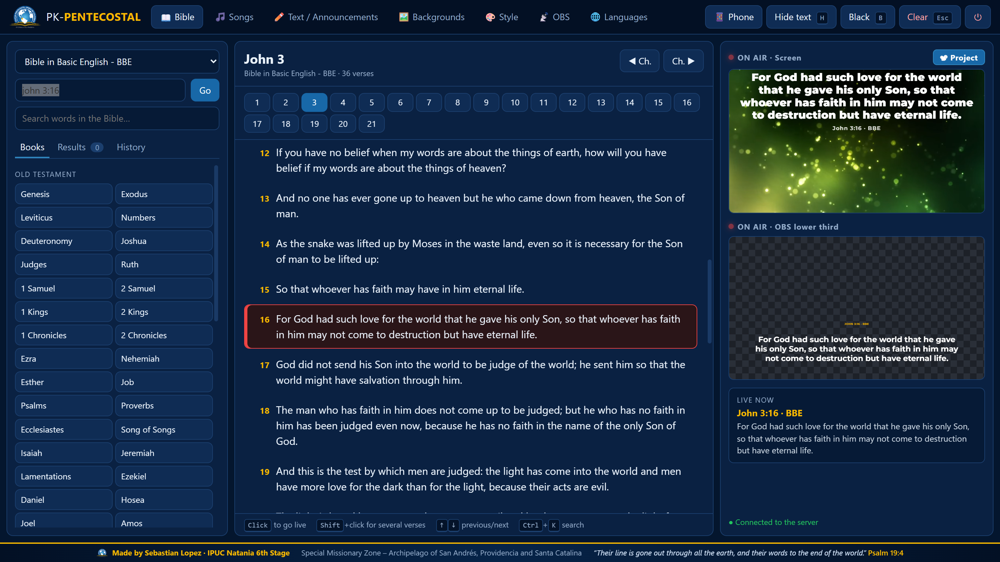
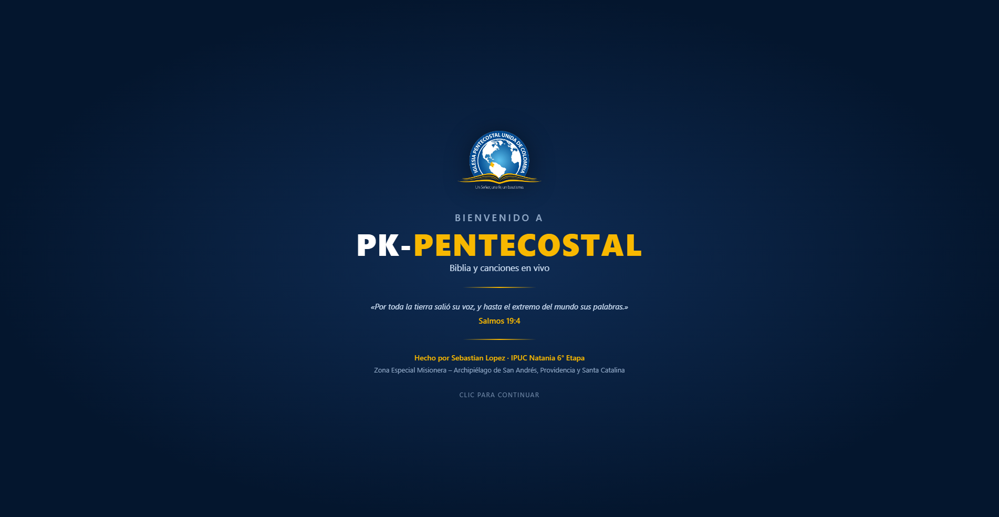
Un programa de escritorio para Windows con su propio servidor interno: reparte lo que usted elige a cada pantalla de la red local. No necesita instalar nada más.
http://pkipuc.localhost/capa y /salidaEn Descargas elija el Instalador (recomendado) o la versión Portable. Ya trae todo lo necesario: no hace falta instalar Node.js ni ningún otro programa.
| Versión | Cómo se usa |
|---|---|
| 🪟 Instalador | Doble clic en PK-PENTECOSTAL-Instalador.exe → Siguiente. Crea el acceso directo en el Escritorio y en el menú Inicio, y se desinstala desde Configuración → Aplicaciones. |
| 💼 Portable | Doble clic en PK-PENTECOSTAL-Portable.exe. No se instala: sirve en una memoria USB y guarda sus ajustes en la carpeta PK-PENTECOSTAL datos, al lado del archivo. |
| 🍎 🐧 macOS / Linux | Descargue el .zip del código fuente (trae la carpeta NODEJS con el instalador oficial de Node.js, no hay que buscarlo) y abra iniciar-mac.command o iniciar-linux.sh. |
El panel se abre solo en su propia ventana. Si otro programa usa el puerto 8888, PK-PENTECOSTAL elige otro automáticamente; si ya estaba abierto, solo muestra la ventana.
En OBS: Fuentes → + → Navegador · Ancho 1920 · Alto 1080 · y pegue una de estas direcciones.
| Dirección | Qué muestra |
|---|---|
/capa | Rótulos + Banner (recomendado) |
/capa?solo=overlay | Solo rótulos (nombres) |
/capa?solo=banner | Solo banner (versículos y letras) |
/salida?modo=obs | Tercio inferior clásico |
/salida?modo=pantalla | Pantalla completa con fondo |
/salida?modo=chroma | Fondo verde (ATEM, vMix) |
/stinger | Transición a pantalla completa |
/cuenta | Cuenta regresiva «Empezamos en…» |
Todas empiezan con http://pkipuc.localhost
Conecte el teléfono a la misma red que el computador.
En el panel aparece un código QR.
Con la cámara del teléfono. Para tenerlo como app: Agregar a pantalla de inicio.
PK-PENTECOSTAL (Windows, hasta 8 teléfonos).Pestaña 🌐 Idiomas → Español latino, English (US) o English (UK). Cambia al instante en el computador y en los celulares.
| Biblia en español | Pareja en inglés |
|---|---|
| Reina Valera 1960 | King James Version (KJV) |
| NVI · NTV | World English Bible (WEB) |
| DHH · TLA · PDT | Bible in Basic English (BBE) |
Busque juan 3:16 o jn 3:16 en cualquier idioma; la cita sale como John 3:16.
| Tecla | Acción |
|---|---|
| Clic | Mandar al aire |
| Shift + clic | Varios versículos juntos |
| ← → / Espacio | Anterior / siguiente (cambia de capítulo solo) |
| 1 … 9 | Ir a la estrofa de la canción |
| Esc | Quitar el texto del aire |
| B | Pantalla negra |
| H | Ocultar texto (deja el fondo) |
| Ctrl + K | Buscar referencia |
| Ctrl + S | Guardar ajustes del módulo OBS |
| S / Shift + S | Stinger completo / cubrir y descubrir |
No. Solo para descargar el programa. Durante el culto todo funciona sin conexión.
Es normal en programas gratuitos sin firma digital paga. Pulse Más información → Ejecutar de todas formas. Solo pasa la primera vez.
Nada. PK-PENTECOSTAL es gratuito para las iglesias.
Desde la versión 2.0 ya no hay que hacer nada: si otro programa (por ejemplo, el Proyektor original) usa el puerto 8888, PK-PENTECOSTAL elige solo otro libre y no cierra el otro programa. Si ya estaba abierto, abrirlo de nuevo solo muestra la ventana.
En Chrome o Edge, la primera vez acepte el permiso “administrar ventanas en todas las pantallas”. En otros navegadores, lleve la ventana al proyector y pulse F o F11.
Instale la versión nueva encima de la anterior: sus ajustes viven aparte (en %APPDATA%\PK-PENTECOSTAL) y se conservan incluso al desinstalar. ¿Venía de la versión de carpeta (1.x, con PK-PENTECOSTAL.vbs)? Abra el programa, pulse Alt → Archivo → Importar datos de una versión anterior… y elija esa carpeta: se copia todo y antes se guarda un respaldo.
En el programa: Alt → Ayuda → Manual de PK-PENTECOSTAL (PDF con todas las funciones paso a paso).
Al entrar a esta sección la descarga empieza sola. Si no empieza, use el botón.
No necesita Node.js ni otros programas: todo viene incluido. Funciona sin internet. Se actualiza solo, sin desinstalar ni perder nada.
Programa, 9 Biblias, 6 cancioneros, fondos, tipografías y el manual PDF.
No incluye datos de otras iglesias: sus ajustes se crean nuevos en su equipo y se conservan al actualizar.